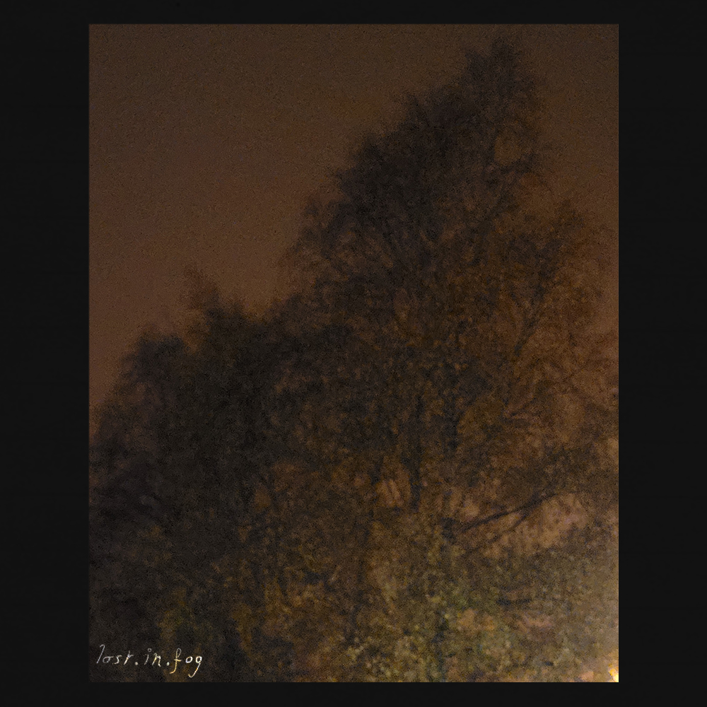

Projet Liminal
Histoire :
Une fois de plus, je rentre comme à mon habitude à la maison, après des heures passé à errer
dehors, sans réel but.
J’ai beau connaître tous ces endroits, les traverser avec
toujours les mêmes musiques qui bouclent sans cesse dans cette même playlist intouchée depuis
trop longtemps et prendre toujours le même chemin lassant et vide de sens, me voici en train de
me battre contre mes démons.
Essayer de se rassurer en vain.
Les voir prendre le
contrôle.
Accepter de voir ce qui si cache.
Une aventure que je n’ai pas
consentie.
Lost.in.fog
